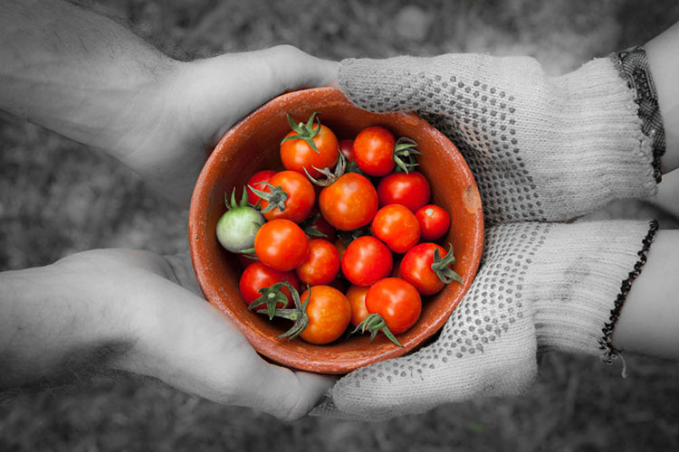

Memory Management
In the area of image processing, we often threshold the intensity of pixels in a greyscale image to produce a new “binary” image which has foreground (intensity=255) pixels corresponding to the object(s) of interest (inputs >= threshold value), and background pixels (intensity=0), corresponding to image parts which are not of interest (lower than threshold value input). This serves as the first stage to more complex processing to allow more accurate detection of objects, and allows us to reason about object sizes and to reject erroneous object detections in an image (or video).